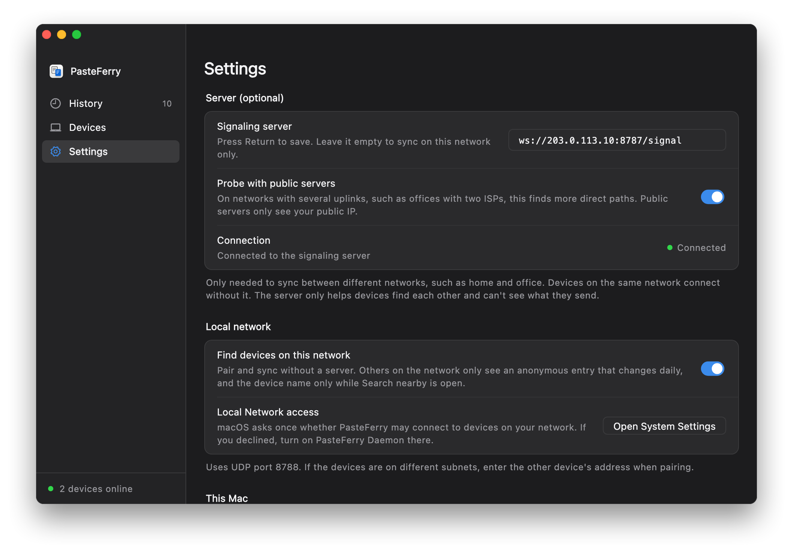

Run it on a public server
A Linux VM with a public IP; the smallest one is enough. Every computer connects to it directly and syncs at home, at the office or anywhere else, with nothing extra to install.
Every computer connects to it
The server is on the public internet, so every computer can reach it from whatever network it's on. What you copy goes directly between the two computers when possible; when that fails, it's relayed through the server, still encrypted.
- Signaling, TCP 8787. Every computer stays connected to it to find the others, pair and exchange connection details.
- Direct. Computers on different networks connect directly through NAT hole punching, which works on most home and office networks.
- Relay, UDP 3478 and relay ports. When a direct path fails, the server forwards the traffic, still encrypted and limited by its bandwidth.
Before you start
- A cloud VM
- Linux on x86_64 or ARM64; the smallest size is enough, as the server uses about 15 MB of RAM. You need root.
- A public IP
- The VM's own public IP works; a static (elastic) one is best. If it changes, every computer has to be updated.
- A way in
- ssh, or the web terminal in your provider's console.
- VMs in mainland China
- Without an ICP filing for the domain, enter the IP in the apps, not the domain; see the questions.
Step 1
Open the ports in the security group
In your cloud provider's console, add these three inbound rules to the VM's security group.
| Protocol | Port range | Source | Purpose |
|---|---|---|---|
| TCP | 8787 | 0.0.0.0/0 | Signaling |
| UDP | 3478 | 0.0.0.0/0 | STUN and TURN |
| UDP | 32768-60999 | 0.0.0.0/0 | Relay ports |
- Different names: some providers call it a firewall or a network ACL; it's the same setting.
- Relay ports are assigned by the OS; the range depends on the server. Run
cat /proc/sys/net/ipv4/ip_local_port_rangeto see it; the install script prints it too. - System firewall: if ufw or firewalld is active, open the same ports there; the install script prints the commands.
Step 2
Run the install script
Give the script the public IP. It installs the server, registers a systemd service that starts on boot, and prints the address to enter in the apps.
- Log in with ssh, for example
ssh root@203.0.113.10with your public IP. - Run these lines, with your public IP on the last one:On ARM, replace
amd64witharm64.curl -LO https://github.com/baiyuze/pasteferry/releases/latest/download/pasteferry-server-linux-amd64.tar.gz tar xzf pasteferry-server-linux-amd64.tar.gz cd pasteferry-server-linux-amd64 sudo ./install.sh 203.0.113.10 - The
ws://203.0.113.10:8787/signaladdress at the end is what you enter in the apps.
- Registers a systemd service that starts on boot; the config is
/etc/pasteferry/server.env. - Upgrade: download the new version, extract it and run
sudo ./install.shagain; your config is kept. - Docker works too: see the server deployment guide.
$ sudo ./install.sh 203.0.113.10 ▶ Installing the binary to /usr/local/bin ▶ Writing the systemd unit ▶ Writing /etc/pasteferry/server.env (relay address 203.0.113.10) ▶ Starting ✓ Running Installed: pasteferry-server 2.2.0 In PasteFerry on each computer, set Settings → Signaling server to: ws://203.0.113.10:8787/signal Config /etc/pasteferry/server.env Logs journalctl -u pasteferry-server -f Restart systemctl restart pasteferry-server Uninstall sudo ./install.sh uninstall Open in your firewall: TCP 8787 (signaling), UDP 3478 (STUN and TURN), UDP 32768-60999 (relay ports, assigned by the OS)
Step 3
Check that it's reachable
Open http://203.0.113.10:8787/healthz (with your public IP) in a browser on any computer. If you see this line, it works.
{"status":"ok","version":"2.2.0"}
If it doesn't load, see the questions below.
Step 4
Enter the address on each computer
Open Settings
Open PasteFerry on each computer and go to Settings.
Enter the public address
Under Signaling server, enter
ws://203.0.113.10:8787/signalwith your public IP and press Return or Enter.Check the status
When Connection shows a green Connected, you're set. If you haven't paired yet, pair under Devices.

Haven't installed the app yet? See the quick start.
| Status | systemctl status pasteferry-server |
|---|---|
| Logs | journalctl -u pasteferry-server -f |
| Restart | sudo systemctl restart pasteferry-server |
| Config | /etc/pasteferry/server.env; restart the service after editing |
| Upgrade | Download the new version, extract it and run sudo ./install.sh again; your config is kept |
| Uninstall | sudo ./install.sh uninstall |
Questions
It works by IP but not by domain
Cloud providers in mainland China intercept plain HTTP requests for domains without an ICP filing and answer with a redirect to a block page; in our tests that included non-standard ports such as 8787. The WebSocket handshake is an HTTP request too, so it is intercepted and the app shows Not connected.
Enter the server's IP instead, as in ws://server-ip:8787/signal, or file the domain.
How big a server do I need?
The smallest one. The server uses about 15 MB of RAM and normally forwards only a few signaling messages. Content goes directly between computers when possible; only relayed transfers are limited by the server's bandwidth.
Devices show Relay instead of Direct
Relay right after connecting, then Direct a little later, is normal: the relay gets you going and the direct path takes over while idle. Staying on Relay means the two computers can't reach each other directly, usually because of a NAT that randomizes ports or a strict firewall. It's still encrypted, just limited by the server's bandwidth.
Can I use HTTPS (wss://)?
Yes, behind an HTTPS reverse proxy that supports WebSocket upgrades; enter an address starting with wss://. Domains in mainland China need an ICP filing. STUN and TURN use UDP and bypass the proxy, so keep those ports open.
My home connection has a public IP. Can I use that?
Yes, but it's more work than a VM: forward TCP 8787, UDP 3478 and a large range of UDP relay ports to that computer, and a home IP may change. If all your computers are at home, they need no server at all on the same network; to sync across networks without port forwarding, see Tailscale.
One cloud VM,
sync from anywhere.
Version 2.2.0, free and open source. macOS 13 or later; Windows 10 and 11; Linux (x64 and ARM64).
Full server guide, including Docker and every option